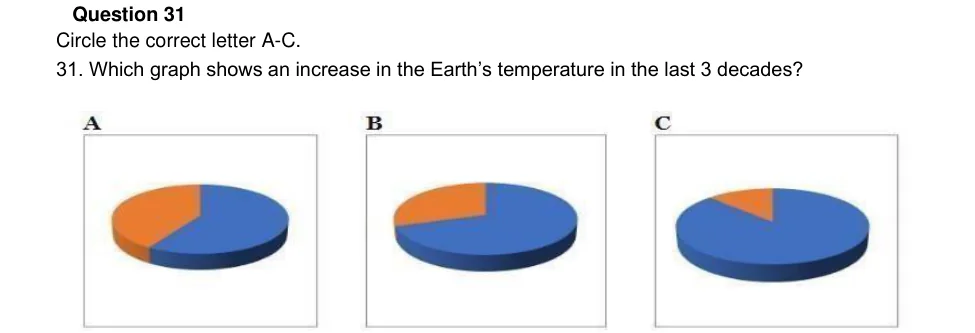
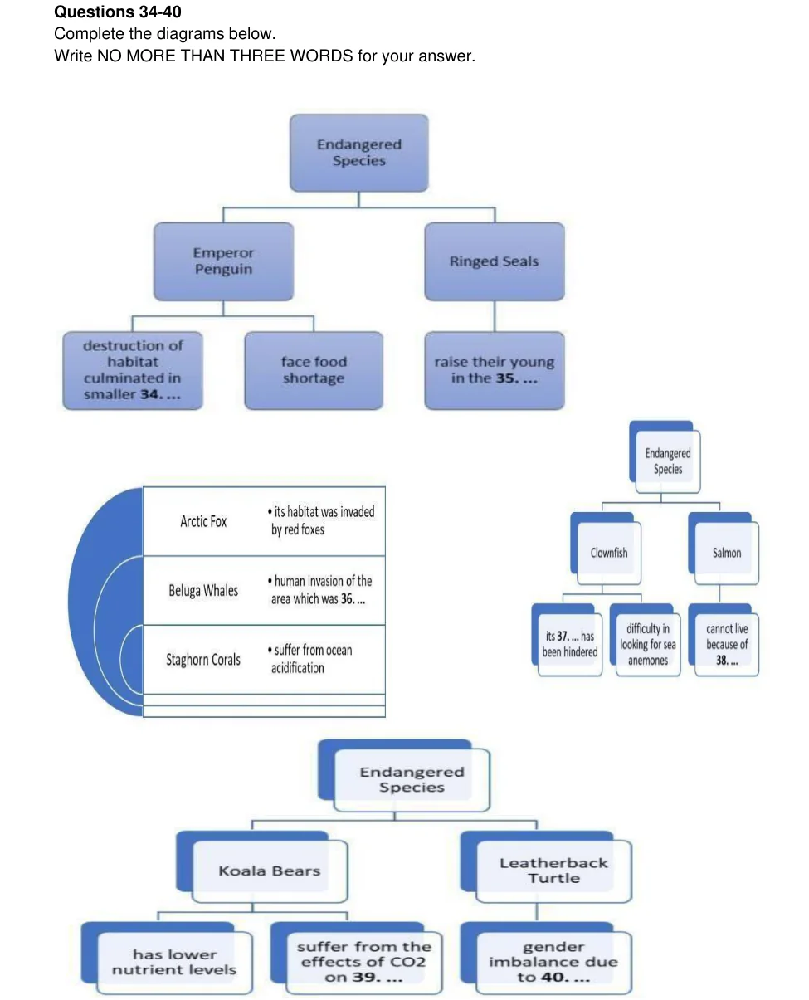
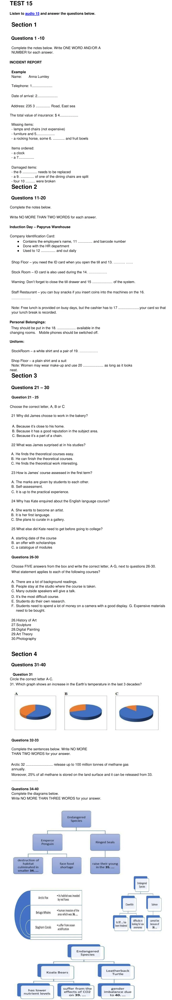

IELTS Listening: Test 15
Listening and questions
Section 1Questions 1–10
Questions 1–10
Complete the notes below. Write ONE WORD AND/OR A NUMBER for each answer.
INCIDENT REPORT
Example
Name: Anna Lumley
Telephone: 1
Date of arrival: 2
Address: 235 3 Road, East sea
The total value of insurance: $ 4
Missing items:
lamps and chairs (not expensive)
furniture and 5
a rocking horse, some 6 and fruit bowls
Items ordered:
a clock
a 7
Damaged items:
the 8 needs to be replaced
a 9 of one of the dining chairs are split
four 10 were broken
Section 2Questions 11–20
Questions 11–20
Complete the notes below.
Write NO MORE THAN TWO WORDS for each answer.
Induction Day – Papyrus Warehouse
Company Identification Card:
Contains the employee’s name, 11 and barcode number
Done with the HR department
Used to 12 and out daily
Shop Floor – you need the ID card when you open the till and 13
Stock Room – ID card is also used during the 14
Warning: Don’t forget to close the till drawer and 15 of the system.
Staff Restaurant – you can buy snacks if you insert coins into the machines on the 16
Note: Free lunch is provided on busy days, but the cashier has to 17 your card so that your lunch break is recorded.
Personal Belongings:
They should be put in the 18 available in the changing rooms. Mobile phones should be switched off.
Uniform:
StockRoom – a white shirt and a pair of 19
Shop Floor – a plain shirt and a suit
Note: Women may wear make-up and use 20 as long as it looks neat.
Section 3Questions 21–30
Questions 21–25
Choose the correct letter, A, B or C
21 Why did James choose to work in the bakery?
22 What was James surprised at in his studies?
23 How is James’ course assessed in the first term?
24 Why has Kate enquired about the English language course?
25 What else did Kate need to get before going to college?
Questions 26–30
Choose FIVE answers from the box and write the correct letter, A-G, next to questions 26-30.
What statement applies to each of the following courses?
- A There are a lot of background readings.
- B People stay at the studio where the course is taken.
- C Many outside speakers will give a talk.
- D It’s the most difficult course.
- E Students do their own research.
- F Students need to spend a lot of money on a camera with a good display.
- G Expensive materials need to be bought.
26 History of Art
27 Sculpture
28 Digital Painting
29 Art Theory
30 Photography
Section 4Questions 31–40

Questions 32–33
Complete the sentences below. Write NO MORE THAN TWO WORDS for your answer.
Arctic 32 release up to 100 million tonnes of methane gas annually.
Moreover, 25% of all methane is stored on the land surface and it can be released from 33

Show the original book pages (picture)

Tap or click the pages to open them full size in a new tab.
Check your answers
Marking ignores capital letters and accepts plurals and the usual alternative answers. If your answer is right but not accepted, press My answer is also right under it.
Tapescript
Check your answers first, then the tapescript opens here.